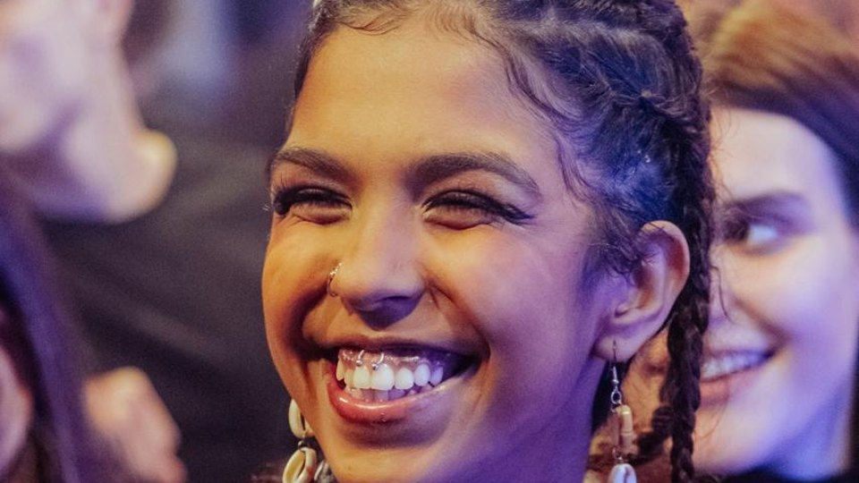
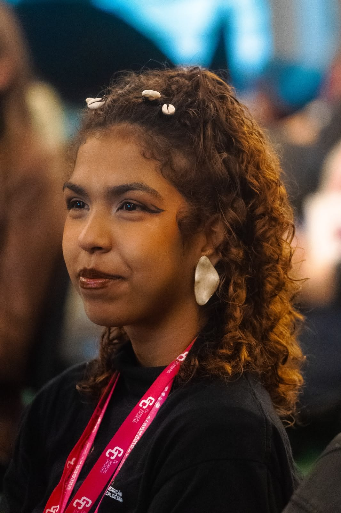

Edu Freitas

Sua foto aqui
da Hora
Marketing, Criatividade e Estratégia.
Meus trabalhos
Vídeos de projetos. Clique para assistir.
Registros
Fotos de bastidores e eventos. Clique para ampliar.

Foto vertical, proporção 4:5Sobre mim
Prazer, me chamo Edu Freitas!
Minha trajetória
Sou profissional de audiovisual, videomaker, estudante do curso técnico em Publicidade e Propaganda e aluno do Geração Caldeira na trilha de marketing e design. Minha trajetória na comunicação nasce da criatividade e da vontade de contar histórias por meio de imagens.
Experiência profissional
Tenho experiência com captação e edição de vídeos para eventos, shows, apresentações artísticas e conteúdos para redes sociais.
Em 2023, atuei como videomaker da Cia de Dança Brasil Estrangeiro, realizando a cobertura audiovisual dos eventos do grupo. Também tive experiência como social media da Menina Arteira Bonecas de Pano, ampliando meu olhar sobre comunicação, produção de conteúdo e construção de narrativas para marcas.
“Enxergo o audiovisual como uma forma de contar histórias, eternizar momentos e despertar sentimentos.”
Especialidades
- Audiovisual e videomaker
- Captação e edição de vídeos
- Conteúdo para redes sociais
Experiências
- Videomaker, Cia de Dança Brasil Estrangeiro (2023)
- Social media, Menina Arteira Bonecas de Pano
Áreas de atuação
-
Marketing Digital
-
Gestão de Redes Sociais
-
Criação de Conteúdo
-
Produção Audiovisual
-
Estratégias de Marketing
-
Gestão de Comunidade